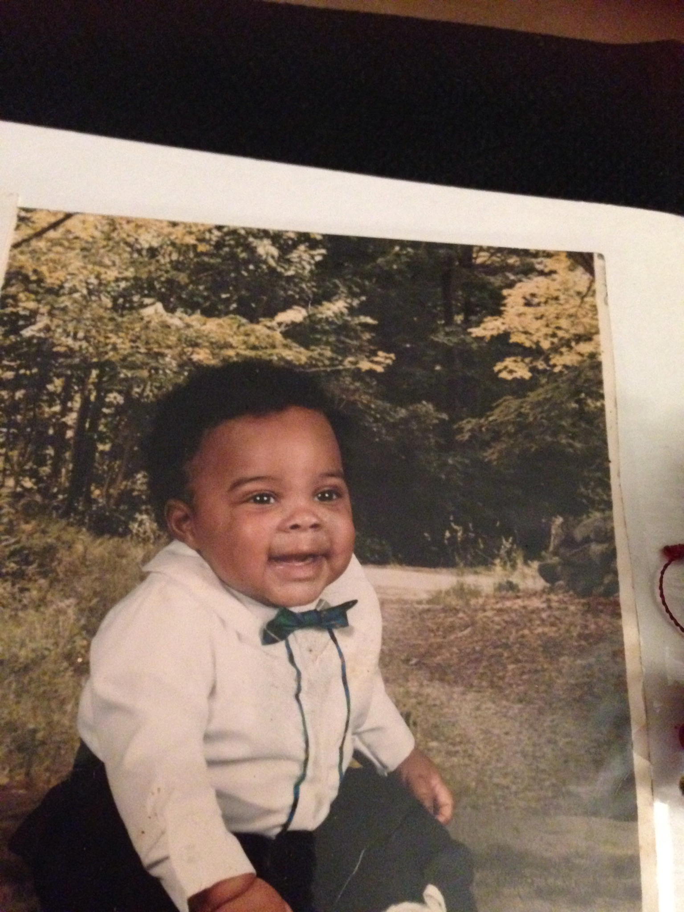

About Me
Oringinally from Goldsboro, NC. My passion is as follows: drums, drums, drums, drums, drums, drums, drums, drums, drums, drums, drums, drums, drums, drums, and a '79 Camaro with a big-block engine would be nice.
Jelly-o cheesecake dessert fruitcake ice cream brownie liquorice soufflé. Caramels biscuit gummi bears tiramisu chupa chups. Croissant macaroon cotton candy cake pudding.
Connect with Me